Hay que instalar el servicio correspondiente en el servidor:
apt-get updateapt-get install -y vsftpdAl instalarlo se crea un usuario ftp automáticamente, que se incluye en el grupo ftp.
También crea el directorio /srv/ftp, que su propietario es root y su grupo ftp. Sirve como directorio para los usuarios anónimos.
Hay que comprobar que el usuario y grupo llamados ftp existen y que el directorio home del usuario es /srv/ftp:
cat /etc/passwd | grep ftpcat /etc/group | grep ftpls /srv/ftpAlgunos de los siguientes ficheros pueden no estar creados por defecto, en ese caso deberían crearse si se necesitan:
|
Fichero de configuración |
|
Lista de usuarios del sistema excluidos paras iniciar sesión |
|
Lista de usuarios del sistema excluidos paras iniciar sesión, pero también se puede permitir si en la configuración está: userlist_deny=NO |
|
Usuarios que no están enjaulados si lo siguiente está en la configuración:
chroot_local_user=YES, chroot_list_enable=YES, chroot_list_file=[ruta] |
|
Para ver los registros de accesos al servidor |
Iniciar el servidor:
service vsftpd startComprobar el estado del servidor:
service vsftpd statusActivar los usuario anónimos ("ftp" o "anonymous"). Su carpeta home será /srv/ftp, de solo lectura:
anonymous_enable=YESPermite la conexión con usuarios del sistema. Su directorio personal será el mismo directorio que tenga en el sistema operativo. Por defecto no están enjaulados:
local_enable=YESPermitir escritura:
write_enable=YESMensaje de bienvenida:
ftpd_banner="Mensaje con espacios"Enjaular a todos los usuarios locales - /etc/vsftpd.conf:
chroot_local_user=YESEnjaular a un usuario local específico - /etc/vsftpd.conf:
chroot_local_user=NO
allow_writeable_chroot=YES
chroot_list_enable=YES
chroot_list_file=/etc/vsftpd.chroot_listLista de usuarios a enjaular - /etc/vsftpd.chroot_list:
Nombre_usuario_1
Nombre_usuario_2
...1. Meter 3 ficheros en /srv/ftp.
2. Crear una conexión al servidor con el usuario "ftp" y descargar un fichero al escritorio local.
ftp [IP]get [Nombre_fichero] /home/[Nombre_usuario]/Escritorio3. Crear una conexión al servidor con un nuevo usuario del sistema y comprobar:
put [Nombre_fichero]put [Nombre_fichero] /home/[Usuario_compañero]/EscritorioEl usuario debe tener permisos en la carpeta de destino.
Con el siguiente comando se puede crear una conexión FTP al sistema remoto:
ftp [IP_servidor] (Puerto)Para autentificarse, el sistema pedirá un usuario y contraseña.
|
Listar el contenido del directorio. |
|
Cambiar de directorio. |
|
Cambiar de directorio del sistema local (no el servidor). |
|
Descargar un fichero del servidor. |
|
Enviar un fichero al servidor. |
|
Ver directorio actual. |
|
Eliminar un fichero. |
|
Listar ficheros del sistema local (no el servidor). |
|
Crear una carpeta. |
|
Crear una carpeta en el sistema local (no el servidor). |
|
Cerrar una conexión FTP. |
|
Todos los comandos disponibles. |
El carrusel de imágenes no se puede enseñar en modo PDF, por favor consúltelo directamente en la página web.
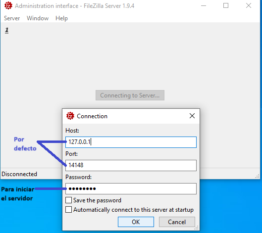
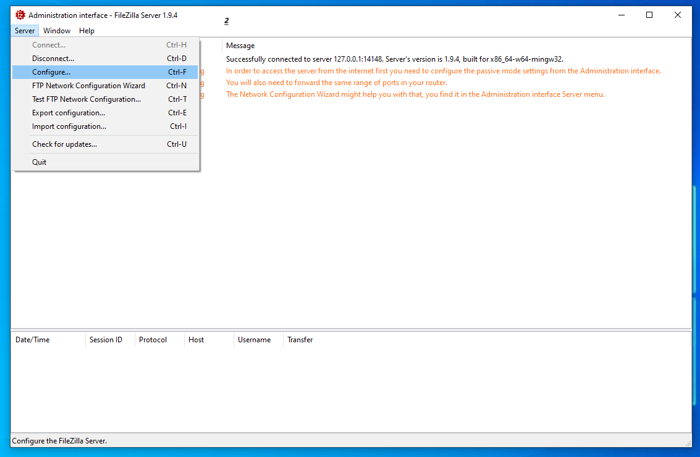
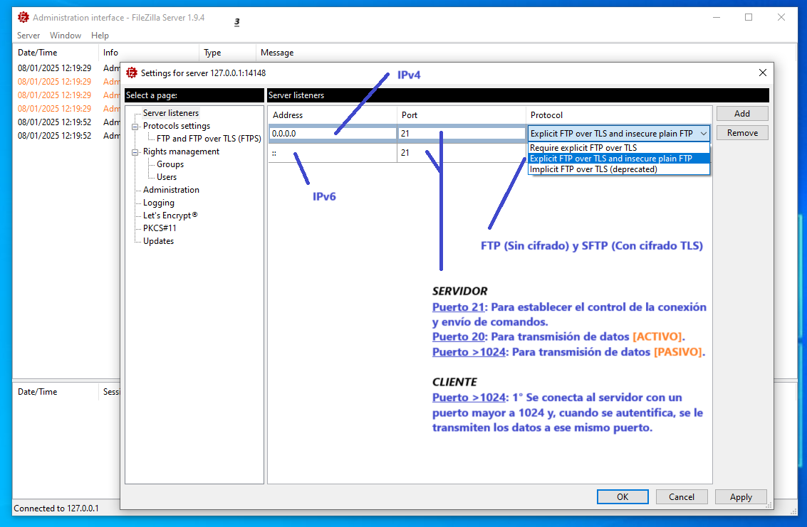
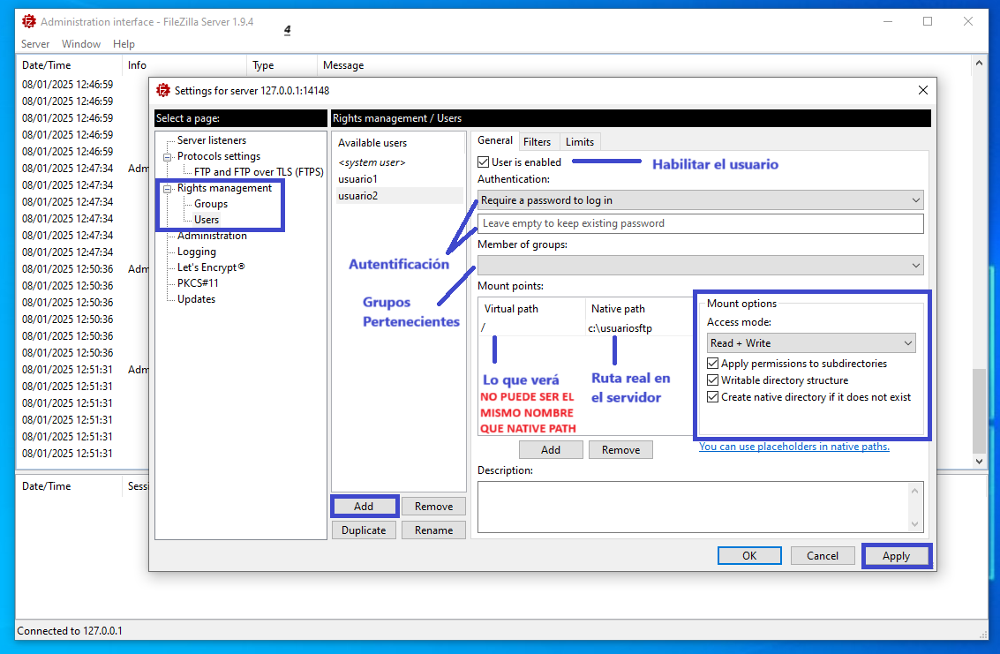
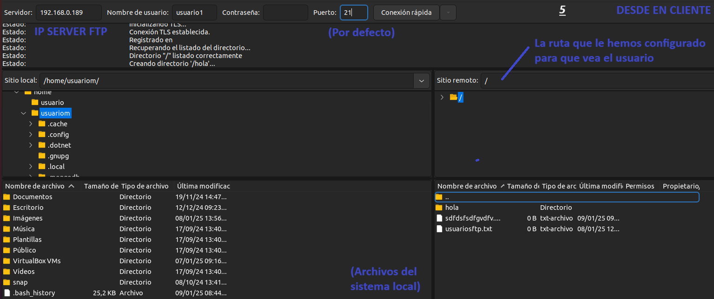
El carrusel de imágenes no se puede enseñar en modo PDF, por favor consúltelo directamente en la página web.
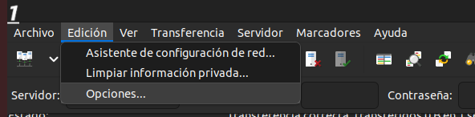
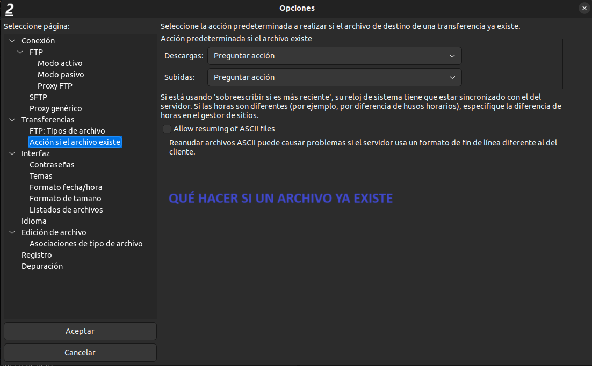
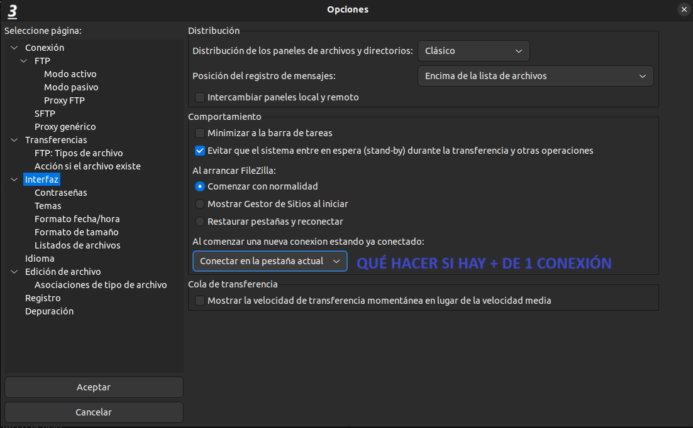
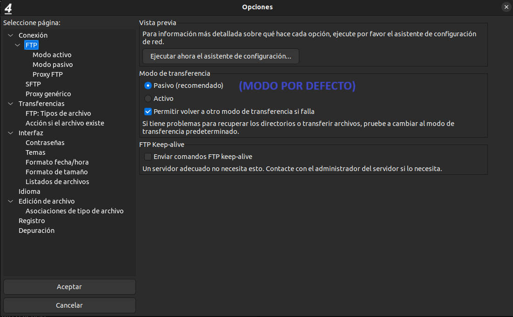
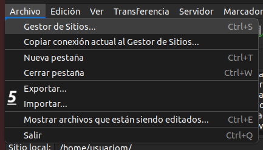
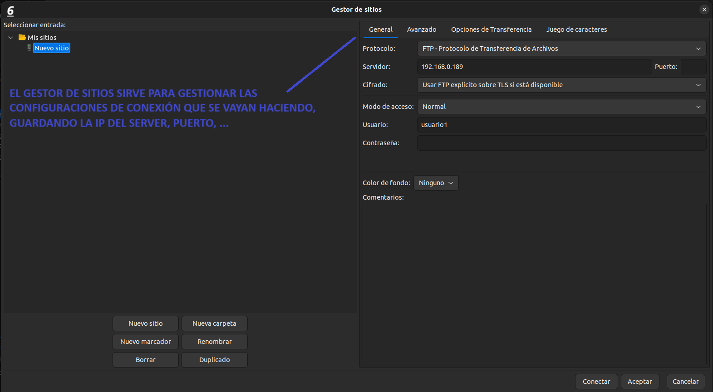